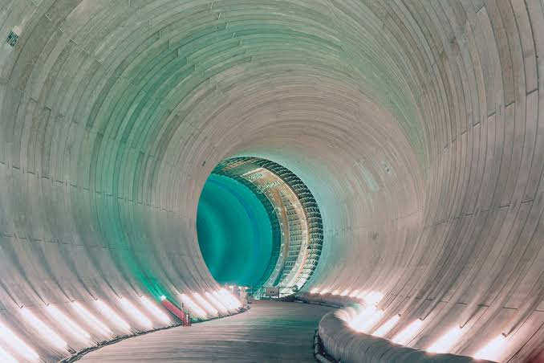

Heavy rainfall can turn streets into flood zones. Current 4 explores how underground discharge tunnels and flood awareness could help reduce flood risk in Taungoo.
Explore Our Solution → Learn Safety TipsFlooding occurs when excess water covers land that is usually dry. It can be caused by heavy rainfall, overflowing rivers, and poor drainage. In Taungoo, flooding can damage homes, roads, and farmland, affecting local communities. Understanding its causes and impacts is essential for finding effective ways to reduce flood risks and protect people's lives and property.


Heavy rainfall occurs when a large amount of rain falls within a short period or continues over a long time. It can cause flooding when excess rainwater overwhelms drainage systems and accumulates on the ground.

Some parts of Taungoo are prone to flooding because rainwater collects in low-lying areas. During heavy rain, drainage systems may not remove water fast enough, causing streets, homes, and farmland to flood.

The Sittaung River can rise above its danger level and overflow, flooding nearby villages and low-lying areas. In July 2025, its water level at Taungoo reached 634 cm, exceeding the reported danger level of 600 cm.

OUR SOLUTION
We aims to design an underground discharge tunnel to help reduce flooding in Taungoo and raise awareness about flood risks. We want to help our community understand the problem, prepare for future floods, and work towards a safer Taungoo.
Explore an underground discharge tunnel to help reduce flood risk.
Share important information about flood risks and safety.
Real projects that inspired our idea. Open them to read more.
Learn about flooding, safety, and our proposed solution.